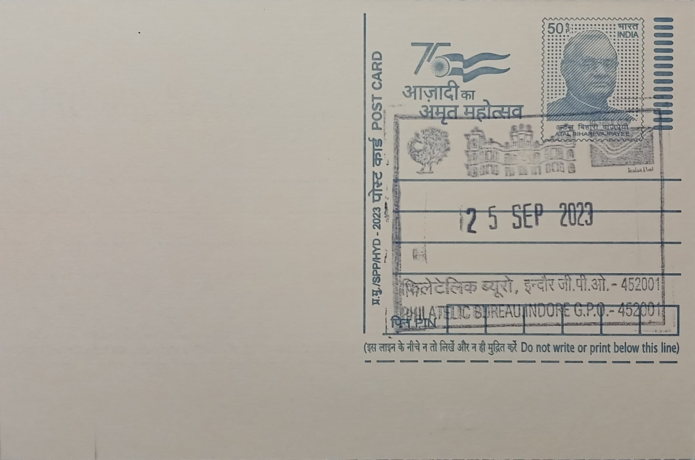

Rajwada Palace and India Post Logo
राजवाड़ा पैलेस अर इंडिया पोस्ट को लोगो


The Rajwada, meaning "royal residence" in the regional vernacular, was raised in 1747 at the heart of Indore by Malhar Rao Holkar, the Maratha general who founded the Holkar dynasty after being granted the jagir of Indore by the Peshwa. Conceived as both a fortified residence and a seat of administration, the seven-storey structure took shape at a time when Indore was emerging from a small trading town on the Kshipra route into the capital of a rising Maratha state, and the palace itself became the visual anchor of that new city, giving its name to the surrounding market square that still functions as Indore's civic centre today.
As the ancestral seat of the Holkars, the Rajwada holds a place among Madhya Pradesh's most significant royal monuments, ranking alongside other Maratha-era palaces of central India as a marker of the dynasty's two-century rule. Its significance is chiefly historical and architectural rather than religious, deriving from its role as the administrative and ceremonial nerve centre of Holkar Indore, where darbars were held, treaties received, and successive Maharajas, including Ahilyabai Holkar's line, conducted the business of the state. Today it is protected and managed as a heritage structure and museum under state and municipal authorities, and it remains one of the most visited monuments in the city.
Architecturally, the palace is a seven-storeyed composite built with stone construction on its lower three levels and timber-framed upper floors, a mixed technique that produced its distinctive carved wooden balconies, jaalis, jharokhas, and chhatris. Its design deliberately fused Maratha, Mughal, and French idioms, reportedly with input from a French architect, so that the building reads as a Mughal structure when viewed from the south and takes on a more European silhouette from the east; the Darbar Hall and the throne associated with Rani Ahilyabai were finished in a distinctly French decorative style, while a massive carved wooden gateway opens onto a courtyard lined with galleries and balconied chambers, including the Ganesha Hall once used for royal ceremonies and functions.
The palace's wooden upper storeys made it acutely vulnerable to fire, and it has burned on at least three recorded occasions: first in 1801 during an attack by the Sindhia commander Sarjerao Ghadge, then again in 1834 when the topmost floor was destroyed, and most severely in 1984, when a blaze gutted much of the rear structure and its wooden storeys. Each time the facade and stone lower floors survived largely intact, allowing successive rebuilding efforts to work from the surviving plan rather than starting anew, and it is this repeated cycle of damage and reconstruction, more than any single event, that has shaped the building visible today.
Following the 1984 fire, the palace's interiors were rebuilt under the direction of Usha Raje Holkar with architects Himanshu Dudwadkar and Shreya Bhargava, who worked from a roughly two-century-old set of blueprints to keep the reconstructed sections faithful to the original materials and finishes, and a further municipal corporation-led renovation carried out between 2017 and 2023, delayed by budget constraints and the COVID-19 pandemic, reopened the site to the public in February 2023. On this cancellation the Rajwada appears beside the logo of India Post, the red-and-yellow winged envelope mark adopted in 2008 to replace the 1993 emblem designed by Professor R. K. Joshi of IIT Bombay's Industrial Design Centre, and the pairing situates a specific Holkar-era landmark within the everyday visual identity of the postal department that issues and circulates its philatelic record.
| Date of Introduction | February 11, 2021 |
|---|---|
| Address | Incharge, |
| Philatelic Bureau, Indore GPO-PB, | |
| Indore (dt.), Madhya Pradesh - 452001. |